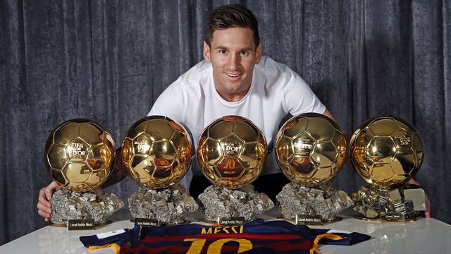

Lionel Andrés Messi was born on June 24, 1987 in the city of Rosario, Argentina. Everyone knows him now as the best football player in the world. In fact, a lot of people say he might become the greatest player ever. We’ll see about that at the World Cup. Messi is FIFA World Player of the Year. He also helped his club team Barcelona win the European Champions League and the World Club Championship. Messi grew up playing football. He joined his first club when he was five. At the age of eight, he signed up for the famous Newell's Old Boys' youth team. His career nearly ended when doctors found out he suffered from a growth hormone deficiency. Luckily, agents from Barcelona saw his talent and in 2000, he moved to Spain. The Catalan club paid for his medical treatment and coached him until he made his Barcelona debut. Lionel started breaking records as soon as he played his first game for Barcelona in the 2004-05 season. He became the youngest footballer ever to play a La Liga game and the youngest to score a goal. He helped his team win the league in his first season, and the league and Champions League double in the following season. In the 2008-09 season he scored an impressive 38 goals as Barcelona won the treble.
Home